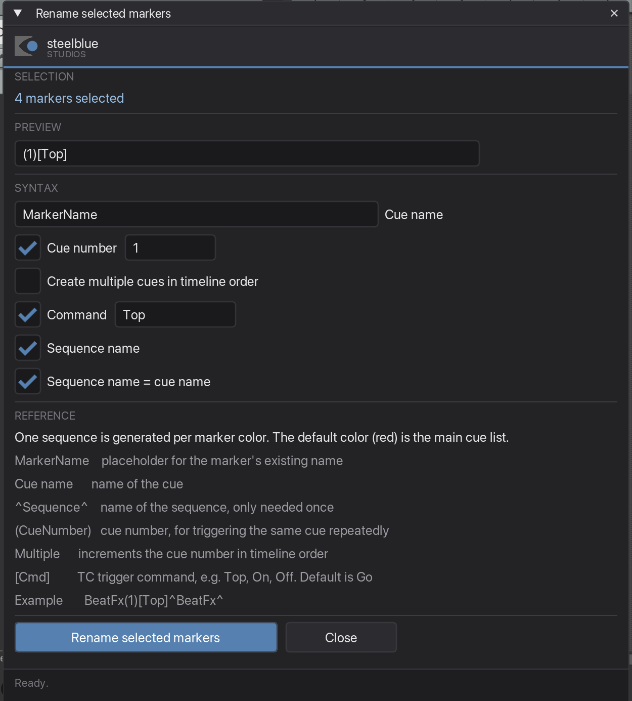
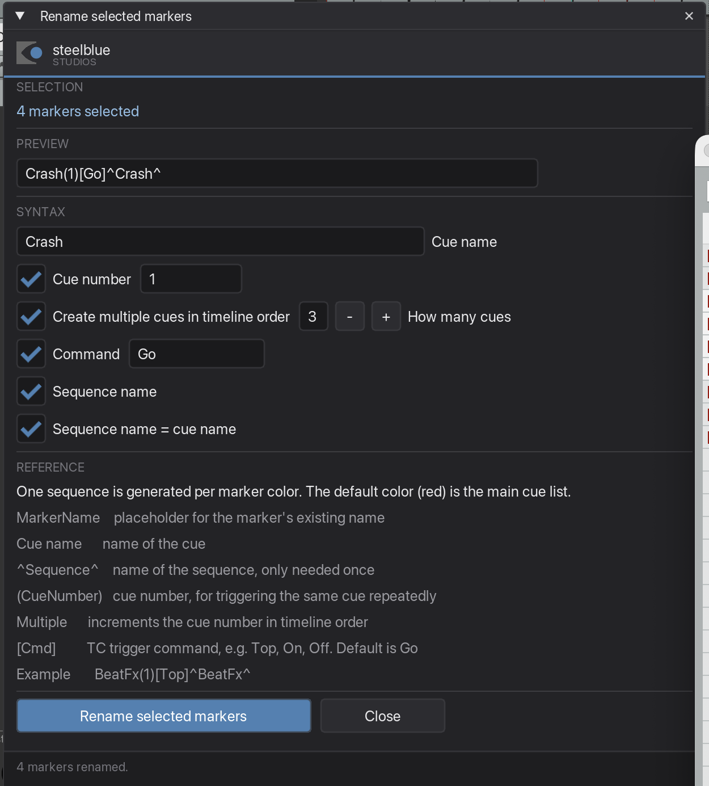
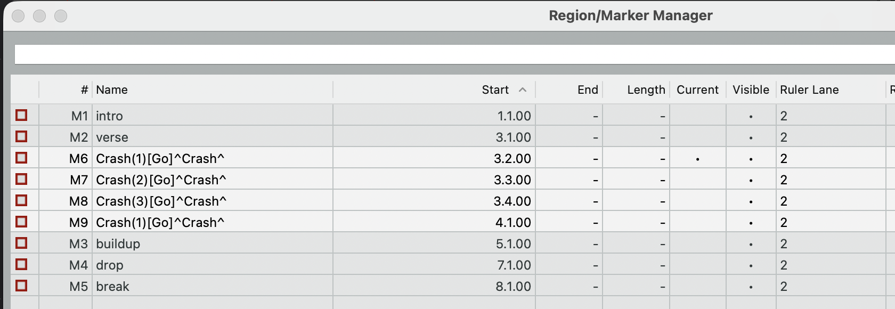

Rename selected markers
Builds MA-Tools cue names for a whole set of markers at once, from parts you switch on and off — instead of typing BeatFx(1)[Top]^BeatFx^ forty times by hand.
What it is for
Your markers arrive from somewhere — you dropped them by ear, or the MIDI plugin created them. Now they need to become cues the timecode trigger understands. This window assembles the syntax for you and applies it to every selected marker in one go, with a live preview so you see the result before you commit.
Step by step
-
Select the markers, then click into the arrange
Pick the markers in the Region/Marker Manager. Then click once in the arrange view.
Do not skip that click. While the Region/Marker Manager has keyboard focus it eats the shortcut — the window will not open, and your selection gets cleared on top of it. One click in the arrange and the shortcut works. Your selection stays; only its highlight fades while the manager is inactive.
-
Start the plugin and build the name
Run Rename selected markers — with the shortcut you assigned, or from the Action List. Every switch you flip changes the preview at the top immediately.

The preview shows what the first selected marker will be called. -
Know what
MarkerNamedoesMarkerNamein the cue name field is not a literal name — it is a placeholder for whatever the marker is already called. Leave it there and a marker called verse becomesverse(1)[Go]^verse^, while drop becomesdrop(1)[Go]^drop^. Each marker keeps its own name inside the new syntax.Type an actual word instead — say
Crash— and every selected marker gets that same name. -
Number repeated cues
Switch on Create multiple cues in timeline order when the same cue is fired several times. How many cues sets how far the counter runs before it starts over.

Four markers selected, the counter set to 3. 
The counter wraps: 1, 2, 3 — and the fourth marker starts again at 1. That wrap is the point of the setting: six markers with the counter at five give you
1 2 3 4 5 1, not1 2 3 4 5 6. -
Rename
Click Rename selected markers. The status line reports how many were changed. Marker positions and colours stay exactly as they were — only the names change.
The syntax, part by part
| Part | What it does |
|---|---|
MarkerName | Placeholder for the marker's existing name |
| Cue name | The name of the cue |
(CueNumber) | Cue number — for triggering the same cue repeatedly |
| Multiple | Counts the cue number up in timeline order, and wraps |
[Cmd] | TC trigger command: Top, On, Off. Default is Go |
^Sequence^ | Name of the sequence. Only needs to be given once |
One sequence per marker colour. Colour is how you split cue lists: the default colour (red) is the main cue list, and every other colour generates its own sequence. Colour your markers before renaming, not after.
Good to know
Order comes from the manager, not from the timeline
The counter follows the order the markers appear in the Region/Marker Manager's list. Sort that list the way you want them numbered before you rename.
This one really does need JS_ReaScriptAPI
Without that extension the plugin cannot read the manager's list and falls back to plain timeline order — so the numbering can come out different from what you expect, without any warning. If you only install one extension besides ReaImGui, make it this one.